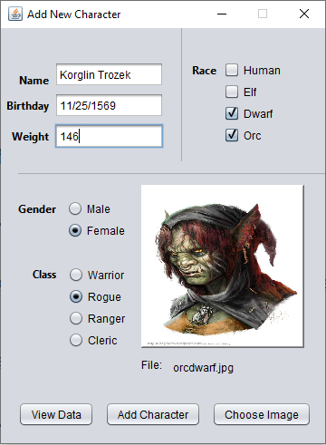

The purpose of this assignment is to test and develop your expertise in Java and MySQL. Create the following table in your MySQL database.
| Column | Datatype |
|---|---|
| Name | varchar(30) |
| Birthday | date |
| Weight | decimal |
| Gender | boolean |
| Class | enum |
| Race | varchar(60) |
| Img | longblob |
Using the Netbeans form builder and/or your own code create a swing gui application to interface with the table above. Database Login can be hard coded for this project. The application will have 2 states, 1 for adding information to the profile and 1 for viewing the entries in the database. You may want to use tab panes, separate jframes or, repaint 1 jframe to switch between the 2 states. (You do not need to code a state machine).
Adding New Entry State
Create 3 labeled text fields for Name, Birth Date and Weight. The form must accept dates in MM/DD/YYYY format. Use Radio buttons for Gender and Class in separate button groups. Use check boxes for Race. Use a JFileChooser to select the image. Provide the name of the file chosen and a scaled preview of the image. Provide a button for submitting the data to the database. Clear all fields after a successful submission. Add a button, tab or menu option to move to the View state.
Viewing Profiles
Provide a Jlist for the user to see the names for each profile in the database. Display all of the labeled data and image for whichever entry is selected. Also provide a button to go back to the Add window if you are not using tabs. Keep your design clean and professional.
Note: The form builder can be very helpful but can also be very frustrating. Setting the layout can solve some problems. You may just want to use it as a quick design tool and then write the code yourself, or not use it at all. Your choice.
Example
Submission rules:
Your project’s name must include your name, example: JohnDoeExam1
You must use the Java naming convention.
Turn in your work as a zipped Netbeans project.